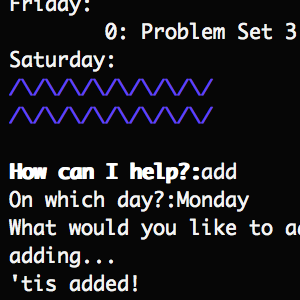
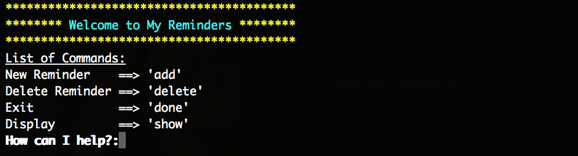
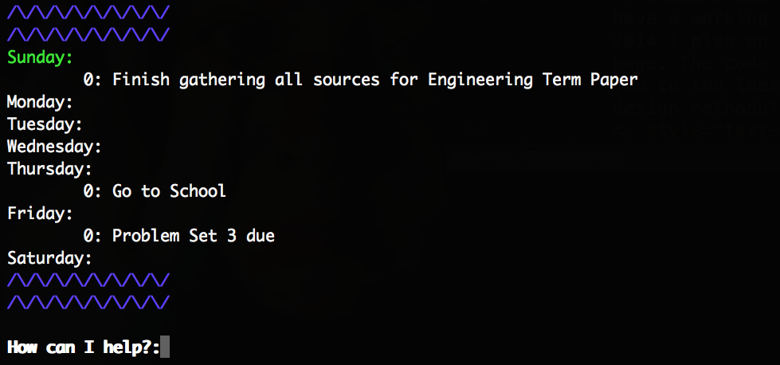
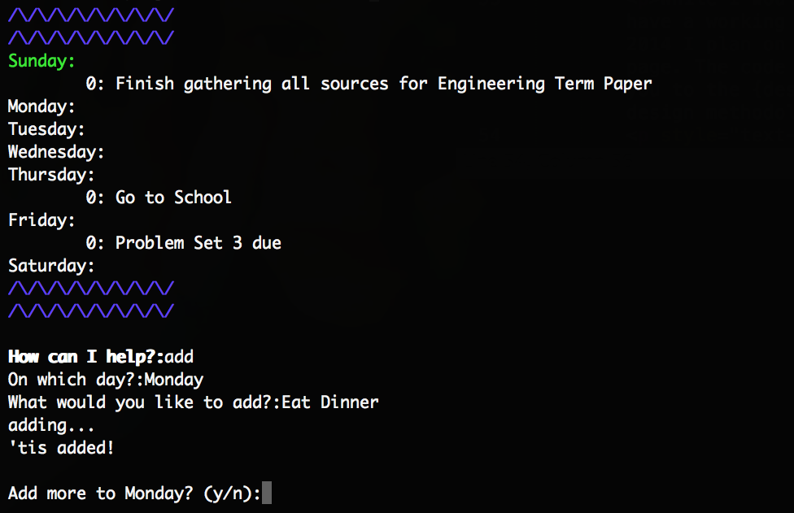

| Command Line To-Do App  | Second Portfolio Piece |
| Third Portfolio Piece | Fourth Portfolio Piece |
Computer super-users sometimes enjoy controlling their machines through the terminal. It's the perfect way to warn the plebs that you're a hax0r and that they shouldn't mess with you. It's a pity when you have to leave the command line to use an application.
I made it my goal to allow super-users to do even more without leaving the comfort of their terminals. And I started simple, with a command-line To-Do list 'app'.
Entering the To-Do list command should clear the window and display the days of the week. Those days with items added to them should display those items. The prompt should now ask you what you want to do. Something like --help should display possible commands.
This program would be different in ways that I'd always wanted: Only one week is visible. Ever. Each item you add to your to-do's would be accompanied by a time-stamp, so that if you open the app past 7 days that you created an item, you would be prompted to either delete (completed) or move (incomplete) the item. I didn't want this program to ever be used as a calendar.
Before even thinking about writing any code, I drew up my vision for the app. Above and below are some of the initial sketches.
As depicted, the idea was to display the week from Sunday to Monday as a list, with sublists of items to do. These rectangles of paper were my prototypes throughout the duration of my human-centered design process. I would draw up the template and prompt (usually "What would you like to do?"), and ask my user to attemt to carry out a task, such as "adding an item". I then studyed how the user went about trying to accomplish this task. The user used a pencil to interact with the prototype, and I would write further prompts with a pen. For example, a typical "add" test would look like this:
What would you like to do?
> Add
To which day?
> Wednesday
What would you like to add?
> Meet John for lunch
It was added!
In this way, I could react to the user's commands and have the prompt 'respond' accordingly. For example, this happened during an "add" with a CS major:
What would you like to do?
> Thursday.add(Attend math review session)
It was added!
In that test, the user provided enough information to successfully complete an "add" task in one line. Therefore, the correct response from the program would naturally be to complete the addition! This style of user research allowed me to quickly gain insight into how users would naturally interact with my program before I began to code it. This would go on to save me valuable time in the text editor.
Now that I had an efficient method of collecting user sentiments, it was all about repetition. I began with my initial notes on how the program should expect user commands, but with each set of trials I found myself edited my notes. I would enter the next round with new expectations for my program and how people would interact with it. These too were inevitably broken down. I took suggestions: "I want to be able to delete a bunch from one day without going through another delete command," "I want to be able to clear the entire list," "I want the program to greet me by name!" etc. Each time I received a reasonable suggestion, I added it to my program's user interactions notes, and would begin observing its functionality along with the others in the next round of user testing. Rinse and repeat!
It was finally time for code. User testing played a pivotal role in the development of my initial idea. In a way, the final design of the program was not created by me, but by the people testing my prototypes. I highly recommend this human-centered process because I could proceed to the keyboard with the confidence of satisfied users.
While I wouldn't consider the program absolutely finished, I currently have a working version of it (snapshots below). Before the end of Summer 2014 I plan on having a full pilot version availabe for download on this page. The code will be available beforehand for viewing on Github. Thank you to the {design.} DeCal at UC Berkeley for encouraging the creation and design methodology of this program.
  May 4th, 2014
{kind=link}
{kind=link}
{kind=link}
{kind=link}
{kind=link}
{kind=link}